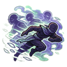

Improved Feint D
Fool one enemy into dropping their guard.
| Rank | Chakra | Cooldown | Class level |
|---|---|---|---|
| D | 8 | 10 s | 2 |
Technique trees › Universal taijutsu
4 techniques · Taijutsu tab
Unlocks through World of Naruto's own trees, a gene, a build choice or a profession.
Fool one enemy into dropping their guard.
| Rank | Chakra | Cooldown | Class level |
|---|---|---|---|
| D | 8 | 10 s | 2 |

Feint, then flicker out of the fight.
| Rank | Chakra | Cooldown | Class level |
|---|---|---|---|
| C | 14 | 15 s | 4 |
A serene facade, then a draw and strike in one motion.
| Rank | Chakra | Cooldown | Class level |
|---|---|---|---|
| C | 14 | 15 s | 6 |
Deceptive footwork leaves one enemy defenceless.
| Rank | Chakra | Cooldown | Class level |
|---|---|---|---|
| A | 40 | 50 s | 13 |